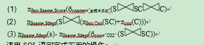
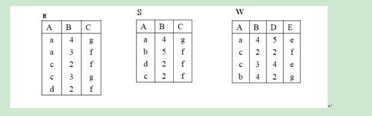

《数据库系统概论》模拟试卷(一)
一、单项选择题 (每小题2分，共30分)
1、 （ B ）是按照一定的数据模型组织的，长期储存在计算机内，可为多个用户共享的数据的集合。
（A）、数据库系统 （B）、数据库 （C）、关系数据库 （D）、数据库管理系统
2、 下列关于索引的叙述，正确的是（ A ）。
（A）、可以根据需要在基本表上建立一个或多个索引，从而提高系统的查询效率。
（B）、一个基本表最多只能有一个索引。
（C）、建立索引的目的是为了给数据表中的元素指定别名，从而使别的表也可以引用这个元素。
（D）、一个基本表至少要存在一个索引。
3、 设有两个关系R（A，B）和S（A，C），下列等式成立的是（ A ）。
4、 在数据库的物理结构中，将具有相同值的元组集中存放在连续的物理块的存储方法称为（ C ） 。
（A）、HASH （B）、B树索引 （C）、聚簇 （D）、其它
5、 设有两个事务T1、T2，其并发操作如图所示，下面评价正确的是（ D ）
（A）、该操作不存在任何问题（B）、该操作丢失修改（C）、该操作不能重复读（D）、该操作读“脏”数据
6、 关系模式规范化理论主要解决的问题是（ B ）
（A）、提高查询速度
（B）、消除操作异常和数据冗余
（C）、减少数据操作的复杂性
（D）、保证数据的安全性和完整性
7、 层次型、网状型和关系型数据模型划分原则是（ D ）。
（A）、 记录长度 （B）、 文件的大小 （C）、 联系的复杂程度 （D）、数据之间的联系
8、 有关系：R（A，B，C）（主码为A）和S（D，A）（主码为D，外码为A），外码A参照于关系R的主码A。关系R和S的元组如图所示，指出关系S中必定违反完整性规则的元组是（ C ）。
（A）、（1，2） （B）、（2，null） （C）、(3，3) （D）、(4，1)
9、 设有两个关系R（A，B）和S（B，C），与下列SELECT语句
SELECT A，B FROM R WHERE B NOT IN（ SELECT B
FROM SWHERE C='C56'）；
等价的关系代数表达式是（ C ）。
（A）、πA,B（σC≠'C56'（R S）） （B）、πA,B（R S）
（C）、 R－πA,B（σC= 'C56'（R S）） （D）、R－πA,B（σC≠'C56'（R S））
10、 定义基本表时，若要求年龄属性的取值必须大于0，则可以使用( D )约束。
（A）、 NULL （B）、 PRIMARY KEY （C）、DISTINCT （D）、 CHECK
11、 已知关系模式R（A，B，C，D，E）及其上的函数依赖集合F={A→B，E→A，CE→D}，则该关系模式的候选键是（ C ）。
（A）、 AE （B）、BE （C）、 CE （D）、 DE
12、 下列叙述正确的是（ C ）。
（A）、关系中元组没有先后顺序，属性有先后顺序
（B）、关系中元组有先后顺序，属性没有先后顺序
（C）、关系中元组没有先后顺序，属性也没有先后顺序
（D）、关系中元组有先后顺序，属性也有先后顺序
13、 “一个事务中的诸操作要么都做，要么都不做”，这是事务的（ A ）特性。
（A）、原子性 （B）、一致性 （C）、隔离性 （D）、持久性
14、 关于事务的故障与恢复，下列说法正确的是（ D ）。
（A）、事务日志用来记录事务执行的频度
（B）、任何故障的恢复都由系统自动完成
（C）、系统故障的恢复只需进行REDO操作
（D）、对日志文件设置检查点是为了提高故障恢复的效率
15、 若事务T1已经给数据对象A加了排它锁，则事务T2（ D ）。
（A）、只能再对A加共享锁 （B）、只能再对A加排它锁
（C）、可以对A加共享锁，也可以对A加排它锁 （D）、不能再给A加任何锁
二、简答题（每小题5份，共10分）
1、什么是日志文件？登记日志文件时为什么必须要先写日志文件，后写数据库？
答：（1）日志文件是用来记录事务对数据库的更新操作的文件。
（2） 把对数据的修改写到数据库中和把表示这个修改的日志记录写到日志文件中是两个不同的操作。有可能在这两个操作之间发生故障，即这两个写操作只完成了一个。如果先写了数据库修改，而在日志文件中没有登记这个修改，则以后就无法恢复这个修改了。如果先写日志文件，但没有修改数据库，在恢复时只不过是多执行一次UNDO操作，并不会影响数据库的正确性。所以一定要先写日志文件，即首先把日志记录写到日志文件中，然后写数据库的修改。
2、什么是数据独立性？数据库系统如何实现数据独立性？
答： 数据独立性是指应用程序和数据之间相互独立，不受影响，数据独立性包括物理数据独立性和逻辑数据独立性。物理数据独立性是指数据库物理结构改变时，不需要修改现有的应用程序，逻辑独立性是指数据库逻辑结构发生改变时，不需要修改现有的应用程序。
数据独立性是由DBMS的二级映像功能来实现的。数据库系统采用外模式、模式和内模式三级模式结构，DBMS在这三级模式之间提供了外模式/模式和模式/内模式两层映像。当整个系统要求改变模式时，由DBMS对外模式/模式的映像作相应的修改，而外模式保持不变，应用程序是依据数据库的外模式编写的，所以应用程序不必修改，从而保证数据的逻辑独立性；当数据库的存储结构发生，由DBMS对模式/内模式的映像作相应的修改，可以使模式保持不变，从而外模式不变，因此应用程序不必修改，从而保证数据的物理独立性。
三、综合应用题（60分）
1、（21分）
设有一个Student数据库，包括学生，课程，选修三个关系：
学生:S ( Sno，Sname，Ssex，Sage,Sdept )
课程:C ( Cno，Cname，Term,Credit )
选修:SC ( Sno，Cno，Score )
其中：学生关系S的属性分别表示：学号、姓名、性别、年龄、专业
课程关系C的属性分别表示：课程号、课程名、开课学期、学分
选修关系SC的属性分别表示：学号、课程号、分数
请用关系代数表达式完成如下查询：
(1)、 查询选修了课程名为“数据库系统”课程的学生学号、姓名和成绩
(2)、 查询选修了全部课程的学生姓名和所在的专业
(3)、 查询没有选修课程号为“C02”课程的学生姓名和所在的专业
(1) πSno,Sname,Score(бcname=’数据库系统’(S SC C)
(2) πSname,Sdept(S (πSno,Cno(SC)÷πcno(C)))
(3) πSname,Sdept(s)- πSname,Sdept(бcno=’C02’ (S SC))
请用SQL语句完成下面的操作：
(4)、 检索所有比“王华”年龄大的学生姓名、年龄和性别
Select sname,sage,ssex From S Where sage>(select sage from S where sname=’王华’)
(5)、 检索选修了课程号为’C02’课程的学生中成绩最高的学生的学号
Select sno from sc 我here cno=’c02’ and grade>=ALL(select grade from sc where cno=’c02’)
(6)、 检索选修了4门以上课程的学生学号和总成绩（不统计不及格的课程），并要求按照总成绩的降序排列。
Select sno,sum(grade) from sc Where grade>=60 Group by sno having count(*)>=4
Order by 2 desc
(7)、 检索张力同学没有选修的课程的课程号
Select cno from c Where not exists (select * from s,sc where s.sno=sc.sno and sc.cno=c.cno and sname=’张力’)
2、(6分)设有如下图所示的关系R和T，计算下列代数表达式的结果：
(1)、R1 = R T
(2)、R2 =бR.B=T.B(R×T)
(3)、R3 = R÷T

3、（4分）今有两个关系模式：
（1）职工（职工号，姓名，年龄，职务，工资，部门号），其中职工号为主码；部门号为外码；
（2）部门（部门号，名称，经理名，地址，电话），其中部门号是主码；
请用SQL语言的GRANT语句（加上视图机制）完成以下授权定义：
用户杨兰具有SELECT每个部门的职工最高工资，最低工资，平均工资的权力，但他不能查看每个人的工资。
CREATE VIEW 部门工资统计（部门号，最高工资，最低工资，平均工资）
AS SELECT部门号，MAX(工资)，MIN（工资），AVG（工资）
FROM职工GROUP BY部门号； GRANT SELECT ON TABLE 部门工资统计 TO 杨兰；
4、（6分）在数据库系统中有如下一个调度S，它涉及到5个不同的事务T1、T2、T3、T4和T5。请问调度S是冲突可串行化的吗？为什么？如果调度S是冲突可串行化的，就请给出与之等价的一个串行调度序列。
答：
通过交换调度S中的不冲突操作，可以得到一个新的调度S’(T1T2T3T4T5)，因为调度S’是串行调度，因此该调度S是冲突可串行化的。与之等价的串行调度顺序是T1、T2、T3、T4、T5；或T1、T2、T4、T3、T5。
5、(8分) 假设有关系模式：
授课（课程编号，课程名称，学分，教师编号，教师姓名，学生编号，成绩）。
其语义为：每个课程（由课程编号决定）有确定的课程名称及学分；每个课程有唯一的一位老师授课；每个教师（由教师编号决定）有确定的教师姓名，可以讲授多门课程 ；每个学生可以选修多门课程，每门课程有多个学生选修；每个学生选修某一课程，有确定的成绩。
（1）、指出此关系模式的候选码
答:该关系模式的候选码为:(课程编号,学生编号)
（2）、写出此关系模式的函数依赖，如果是部分函数依赖或传递函数依赖请标明。
答:存在以下函数依赖:
{ 课程编号课程名称,课程编号学分,课程编号教师编号,
教师编号教师姓名, (课程编号,学生编号) 成绩 }
(课程编号,学生编号) 成绩
(课程编号,学生编号) 课程名称，
(课程编号,学生编号) 学分
(课程编号,学生编号) 教师编号，
教师姓名传递函数依赖于（课程编号，学生编号）
（3）、判断此关系模式是第几范式，若不是第三范式，请将其规范化为第三范式的关系模式，并指出分解后的每个关系模式的候选码和外码。
答：该关系模式属于第一范式。
其规范为第三范式如下：
（课程编号，课程名称，学分，教师编号），主码是课程编号，教师编号为外码
（教师编号，教师姓名），主码为教师编号
（课程编号，学生编号，成绩），主码为（课程编号，学生编号 ），课程编号为外码，学生编号为外码
6、 （10分）假设要建立企业工程管理数据库，现已知如下信息：一个职工仅在一个工程中工作，但一个工程中有很多职工参加工作，有多个供应商为各个工程供应不同种类及数量的设备。描述职工的属性有：职工号、姓名、性别，单位名等。描述设备的属性有：设备号、设备名、产地。描述供应商的属性有：供应商姓名、电话。描述工程的属性有：工程名、地点。
（1）根据上述语义画出E-R图，在E-R图中需注明实体的属性、联系的类型及实体型。
（2）将E-R图转换成关系模式集，要求每个关系模式要规范到第三范式，并指出每个关系模式的主键和外键。
（2） 关系模式：
职工（职工号，单位名，姓名，性别，工程名），职工号为主码，工程名为外码
设备（设备号，设备名，产地），设备号为主码
供应商（供应商姓名，电话），供应商姓名为主码
工程（工程名，地点），工程名为主码
供应（供应商姓名，工程名，设备号，数量），
（供应商姓名，工程名，设备号）为主码
供应商姓名为外码，工程名为外码，设备号为外码
7、(5分)假设教学数据库中有3个关系：
S(S#,SNAME,AGE,SEX) C(C#,CNAME,TEACHER) SC(S#,C#,GRADE)
其中：学生关系S的属性分别表示：学号、姓名、年龄、性别
课程关系C的属性分别表示：课程号、课程名、任课教师
选修关系SC的属性分别表示：学号、课程号、分数
有一查询语句：检索没有选修课程名为“软件工程”课程的学生姓名和年龄
（1） 请写出该查询的关系代数表达式
（2） 使用优化算法，对关系代数语法树进行优化，画出优化后的语法树。
答
《数据库系统概论》模拟试卷(二)
一、 单项选择题 (每小题2分，共30分)
1. 在数据管理技术的发展过程中，经历了人工管理阶段、文件系统阶段和数据库系统阶段。在这几个阶段中，数据独立性最高的是（ A ）阶段。
(A)、数据库系统 (B)、文件系统 (C)、人工管理
2. 下面给出的关于数据库的三级模式结构的说法中，( C )是不正确的。
I． 数据库中只有一个模式
II．外模式与模式之间的映像实现数据的逻辑独立性
III．外模式与内模式之间的映像实现数据的物理独立性
（A）、仅I （B）、 仅II
（C）、仅III （D）、都不正确
3. 设有关系SC（SNO，CNO，GRADE），主码是（SNO，CNO）。遵照实体完整性规则，（ D ）。
（A）、只有SNO不能取空值
（B）、只有CNO不能取空值
（C）、只有GRADE不能取空值
（D）、SNO与CNO都不能取空值
4. 以下（ D ）封锁违反两段锁协议。
（A）、Slock A … Slock B … Xlock C …… Unlock A … Unlock B … Unlock C
（B）、Slock A … Slock B … Xlock C …… Unlock C … Unlock B … Unlock A
（C）、Slock A … Slock B … Xlock C …… Unlock B … Unlock C … Unlock A
（D）、Slock A …Unlock A ……Slock B … Xlock C … Unlock B … Unlock C
5. 数据库应用程序的编写是基于三级模式结构中的( A )
（A）、外模式 （B）、逻辑模式（C）、内模式 （D）、概念模式
6. 一个关系中的各个元组（ B ）
（A）、前后顺序不能任意颠倒，一定要按照输入的顺序排列
（B）、前后顺序可以任意颠倒，不影响关系中的元组操作结果
（C）、前后顺序可以任意颠倒，但排列顺序不同，统计处理的结果就可能不同
（D）、前后顺序不能任意颠倒，一定要按照候选码值的顺序排列
7. 假设W=R S, 且W,R和S的元组个数分别为p,m和n，那么三者之间满足（ D ）
（A）、p<(m+n) （B）、 p≤(m+n) （C）、p<(m×n) （D）、 p≤(m×n)
8. 设关系R与关系S具有相同的目（或称度），且相对应的属性的值取自同一个域，则R-（R-S）等于( B )。
（A）、RUS （B）、R∩S （C）、R×S （D）、R-S
9. WHERE子句的条件表达式中，可以匹配0个到多个字符的通配符式（ B ）
（A）、 * （B）、 % （C）、 - （D）、 ？
10. 设有关系模式R（A，B，C，D），其数据依赖集：
F＝{（A，B）→C，C→D}，
则关系模式R的规范化程度最高达到（ B ）。
（A）、1NF （B）、2NF （C）、3NF （D）、BCNF
11. 若事务T1已经给数据A加上了共享锁，则事务T2（ A ）
（A）、只能再对A加共享锁 （B）、只能再对A加排他锁
（C）、可以对A加共享锁，也可以对A加排他锁 （D）、不能再给A加任何锁
12. 对由SELECT—FROM--WHERE---GROUP---ORDER组成的SQL语句，其在被DBMS处理时，各子句的执行次序 （ C ）。
（A）、SELECT—FROM—GROUP—WHERE--ORDER
（B）、FROM—SELECT—WHERE—GROUP—ORDER
（C）、FROM—WHERE—GROUP—SELECT—ORDER
（D）、SELECT—FORM—WHERE—GROUP—ORDER
13. 关系数据库的规范化理论主要解决的问题是（ A ）。
（A）、如何构造合适的数据逻辑结构
（B）、如何构造合适的数据物理结构
（C）、如何构造合适的应用程序界面
（D）、如何控制不同用户的数据操作权限
14. 在将E－R模型转换成关系模型的过程中，下列叙述不正确的是（ D ）。
（A）、每个实体类型转换成一个关系模式
（B）、每个多对多联系类型转换成一个关系模式
（C）、在处理一对一和一对多联系类型时，可以生成新的关系模式
（D）、每个属性转换成一个关系模式
15. 设有两个事务T1、T2，其并发操作如图所示，下面评价正确的是（ B ）
（A）、该操作不存在任何问题 （B）、该操作丢失修改
（C）、该操作不能重复读 （D）、该操作读“脏”数据
二、 简答题（每小题5分，共10分）
1、什么是“死锁”？处理死锁的方法有哪些？
答：在对并发事务采用封锁机制时，有可能若干事务都处于等待状态，等待对方释放封锁，造成事务都不能继续运行下去，这种现象称系统进入死锁状态。
处理死锁的方法有两种：
（1）死锁预防：保证系统不会进入死锁状态；
（2）死锁检测和死锁恢复：允许系统进入死锁状态，系统周期性调用死锁检测算法，以判断是否产生了死锁；一旦发现死锁，则选择一个回滚代价最小的事务作为牺牲者，对选择的牺牲者采取全部或部分回滚，然后重启。
2、视图是DBMS中的一种虚关系，大多数DBMS都不允许在视图这种虚关系上进行数据的插入、删除和更新的操作，请问这是为什么？
答： 因为视图是虚关系，对视图的修改最终要转换成对产生视图的数据库中基本关系的修改。而这种转化比较困难，且有时是不可行的！例如，如果产生视图的SQL语句中有连接、笛卡儿积和聚集运算（SUM、AVG等）等，则不可能通过视图对基本关系进行修改，因此一般的DBMS不允许在视图这种虚关系上进行数据的插入、删除和更新操作。
三、综合应用题（60分）
1、（21分）现有如下关系数据库：
S(SNO,SNAME,STATUS,CITY)
P(PNO,PNAME,COLOR,WEIGHT)
J(JNO,JNAME,CITY)
SPJ(SNO,PNO,JNO,QTY)
（注：带下划线的是各表的主码）。
其中：
供应商表S由供应商代码（SNO），供应商姓名（SNAME），供应商状态（STATUS），供应商所在城市（CITY）组成；
零件表P由零件代码（PNO），零件名（PNAME），颜色（COLOR），重量（WEIGHT）组成；
工程项目表J由工程项目代码（JNO），工程项目名称（JNAME），工程项目所在城市（CITY）组成；
供应情况表SPJ由供应商代码（SNO），零件代码（PNO），工程项目代码（JNO），供应数量（QTY）组成，表示某供应商供应某种零件给某工程项目的数量为QTY。
用关系代数表达式完成下面的查询:
（1）、找出向北京的供应商购买重量大于30的零件的工程项目名称。
πJname ( бs.city=’北京’∧p.weight>30 ( SPJ S P J)
（2）、检索没有使用天津的供应商生产的红色零件的工程项目代码。
πJno(J)- πJno(бs.city=’天津’∧p.color=’红色’(SPJ S P)
（3）、检索至少使用了供应商代码为’S1’的供应商所供应的全部零件的工程项目代码。
πjno,pno(SPJ)÷ πpno(бsno=’S1’(SPJ))
请用SQL语句完成如下各项操作：
（4）、检索为工程项目代码为’J1’的工程提供红色零件的供应商代码；
SELECT DISTINCT SNO
FROM SPJ, P
WHERE SPJ.PNO=P.PNO AND P.COLOR=’红色’ AND SPJ.JNO=’J1’
（5）、检索没有使用天津的供应商生产的红色零件的工程项目代码；
SELECT JNO
FROM J
WHER NOT EXISTS
(SELECT *
FROM SPJ
WHER SPJ.JNO=J.JNO AND SNO IN
(SELECT SNO
FROM S
WHER CITY=’天津’)
AND PNO IN
(SELECT PNO
FROM P
WHER COLOR=’红色’))
或者：
SELECT JNO
FROM J
WHER NOT EXISTS
(SELECT *
FROM SPJ, S, P
WHER SPJ.JNO=J.JNO AND SPJ.SNO=S.SNO
AND SPJ.PNO=P.PNO
AND S.CITY=’天津’ AND P.COLOR=’红色’)
（6）、把全部红色零件的颜色改为蓝色。
UPDATE P SET COLOR=”蓝色” WHERE COLOR=“红色”；
（7） 按工程项目代码递增的顺序列出每个工程购买的零件总量。
SELECT JNO,SUM(QTY)
FROM SPJ
GROUP JNO
ORDER BY JNO ASC
2、（7分）设有雇员信息关系EMP和部门信息关系DEPT，如下图所示，其中雇员信息关系EMP的主码是雇员号，雇员信息关系EMP的部门号是外码。部门信息关系DEPT的主码是部门号。
分析下列4个操作能否被正确执行，并说明理由。
（1) 在EMP中插入元组(‘102’,‘李燕’,‘01’,1500)
（2）在EMP中插入元组(‘115’,‘张红’,‘05’,1200)
（3）在EMP中插入元组(‘010’,‘李明’,‘02’,1000)
（4）在EMP中插入元组( NULL,‘张燕’,‘02’,1000)
答：这道题目考察的是数据库完整性控制
（1）能正确执行。因为满足数据库的实体完整性和参照完整性
（2）不能正确执行，插入操作破坏参照完整性约束，待插入的元组的“部门号”属性值“05”，在DEPT中找不到没有相应的主键值。
（3）不能正确执行，插入操作破坏了实体完整性约束，待插入的元组的“雇员号”属性值“010”，在EMP表中已经存在。“雇员号”作为主键，其值不能重复，必须唯一。
（4）不能正确执行，插入操作破坏了实体完整性约束，待插入的元组的“雇员号”属性值为空，“雇员号”作为主属性，其值不能为空。
3、（5分）在数据库系统中有如下一个调度S，它涉及到3个不同的事务T1、T2和T3。请问调度S是冲突可串行化的吗？为什么？如果调度S是冲突可串行化的，就请给出与之等价的一个串行调度序列。
答：首先要给出该调度的优先图：
 调度的优先图中存在有向环，因此该调度不是冲突可串行化的。
调度的优先图中存在有向环，因此该调度不是冲突可串行化的。
4、(6分)设有如下图所示的关系R和S，计算下列代数表达式的结果：
(1)、R1 = R S
(2)、R2 =бR.B>S.B(R×S)
(3)、R3 = R÷S
答：
5、（6分）设有一个反映教师参加科研项目的关系模式：
R(教师号，项目名称，科研工作量，项目类别，项目金额，负责人)
如果规定：每个项目可有多名教师参加，一个教师可以参加多个项目，每名教师每参加一个项目有一个科研工作量；每个项目只属于一种类别，只有一名负责人，每个项目有一个项目金额。
(1)、根据上述规定，写出模式R的基本函数依赖和候选码。
(2)、R最高属于第几范式。请说明理由
(3)、若R不是第三范式，请将其规范化为第三范式的关系模式，并指出分解后的每个关系模式的候选码和外码。
答：R的候选码是（教师号，项目名称）
基本函数依赖：（教师号，项目名称）科研工作量，项目名称项目类别，
项目名称项目金额，项目名称负责人
（1） R最高属于第一范式，因为非主属性项目类别，项目金额，负责人对候选码部分函数依赖。
（2） 分解得到：
R1（项目名称，项目类别，项目金额，负责人），项目名称为主码
R2（项目名称，教师号，科研工作量）,（项目名称，教师号）为主码，项目名称为外码
6、（10分）现有关于学会、学生、课程、教师的信息如下：
学生的属性有：学号、姓名、性别、年龄；
课程的属性有：课程号、课程名、学分；
教师的属性有：教师号、姓名、职称、专业；
学会的属性有：学会名称、成立时间、负责人姓名、会费。
假设每门课程可由多位教师讲授，每位教师只讲授一门课程。每个学生可加入多个学会，学生进入学会有一个入会年份。学生可选修多门课程，一门课程多个学生选修，每个学生选修的每门课程有一个成绩记载。
1）根据语义画出E-R图，并在图上注明联系类型；
2）将E-R图转换成3NF关系模式，并根据属性的现实意义指明主码和外码。
答
2）学生(学号、姓名、性别、年龄) 学号为主键
课程(课程号、课程名、学分) 课程号为主键
教师(教师号、姓名、职称、专业、课程号) 教师号为主键，课程号为外键
学会(学会名称、成立时间、负责人姓名、会费) 学会名称为主键
选修(学号、课程号、成绩) 学号和课程号联合为主键，学号和课程号均为外键
入会(学号、学会名称、入会年份) 学号和学会名称联合为主键，学号和学会名称为外键
7、(5分)假设教学数据库中有3个关系：
S(S#,SNAME,AGE,SEX)
C(C#,CNAME,TEACHER)
SC(S#,C#,GRADE)
其中：学生关系S的属性分别表示：学号、姓名、年龄、性别
课程关系C的属性分别表示：课程号、课程名、任课教师
选修关系SC的属性分别表示：学号、课程号、分数
用户有一查询语句：检索女同学所选修的课程的课程名和任课教师。
(1) 试写出该查询的关系代数表达式。
(2) 使用启发式优化算法，对关系代数语法树进行优化，画出优化后的语法树。
答：（1） 关系代数表达式为：
πCNAME，TEACHER（σSEX=’女’（S⋈SC⋈C））
（2）
《数据库系统概论》模拟试卷(三)
一、 单项选择题 (每小题2分，共30分)
1、 下面关于基本关系性质的描述，正确的是（ C ）。
（A）、列的次序不可交换 B）、行的次序不可交换 （C）、任意两个元组不能完全相同 （D）、分量不必取原子值
2、 关系代数的五个基本操作是( D )。
（A）、并、交、差、笛卡尔积、除法
（B）、并、交、选择 、笛卡尔积、除法
（C）、并、交、选择 、投影、除法
（D）、并、差、选择 、笛卡尔积、投影
3、 下列不是用于实现数据库安全控制技术的是（ D ）。
（A）、视图机制 （B）、强制存取方法 （C）、审计 （D）、两段锁协议
4、 在数据库设计的需求分析阶段，业务流程一般采用的表示方法是（ B ） 。
（A）、E-R图 （B）、数据流图 （C）、程序结构图 （D）、程序框图
5、 关系数据库中，实现实体之间的联系是通过关系与关系之间的（ D ） 。
（A）、公共索引 （B）、公共存储 （C）、公共元组 （D）、公共属性
6、 事务的隔离性是指（ B ）。
（A）、事务中包括的所有操作要么都做，要么都不做。
（B）、一个事务内部的操作及使用的数据对并发的其他事务是隔离的。
（C）、事务一旦提交，对数据库的改变是永久的。
（D）、事务必须是使数据库从一个一致性状态变到另一个一致性状态。
7、 设事务T1和T2，对数据库中的数据A进行操作，可能有如下几种情况，请问哪一种不会发生冲突操作（ D ） 。
（A）、T1正在写A，T2要读A （B）、T1正在写A，T2也要写A
（C）、T1正在读A，T2要写A （D）、T1正在读A，T2也要读A
8、 在数据库设计中，当合并局部E-R图时，学生在某一局部应用中被当作实体，而另一局部应用中被当作属性，那么被称之为( D )冲突。
（A）、属性冲突 （B）、命名冲突 （C）、联系冲突 （D）、结构冲突
9、 数据管理技术经历了人工管理，_____和_____。（ D ）
① DBMS ② 文件系统 ③ 网状系统
④ 数据库系统 ⑤ 关系系统
（A）、③和⑤ （B）、②和③ （C）、①和④ （D）、②和④
10、 保护数据库，防止未经授权的不合法的使用造成的数据泄漏、更改破坏。这是指数据的（ A ）。
（A）、安全性 （B）、完整性 （C）、并发控制 （D）、恢复
11、 R为4元关系R(A,B,C,D)，S为3元关系S(B,C,D)，R×S构成的结果集为( C )元关系。
（A）、4 （B）、3 （C）、7 （D）、6
12、 采用SELECT查询语句对关系进行查询操作，若要求查询结果中不能出现重复元组，可在SELECT子句后增加保留字( A )。
（A）、DISTINCT （B）、UNIQUE （C）、NOT NULL （D）、SINGL
13、 数据模型的三要素是（ D ）。
（A）、外模式、模式、内模式
（B）、关系模型、层次模型、网状模型
（C）、实体、联系、属性
（D）、数据结构、数据操作、完整性约束
14、 下列有关主键和外键之间关系的描述中正确的是（ A ）。
（A）、一个表中最多只能有一个主键，多个外键
（B）、一个表中最多只能有一个外键，一个主键
（C）、一个表中可以有多个主键，多个外键
（D）、一个表中最多只能有一个外键，多个主键
15、 数据库(DB)、数据库系统(DBS)和数据库管理系统(DBMS)三者之间的关系是（ A ）。
（A）、 DBS包括DB和DBMS
（B）、 DBMS包括DB和DBS
（C）、 DB包括DBS和DBMS
（D）、 DBS就是DB，也就是DBMS
二、简答题（每小题5分，共10分）
1、什么是视图？简述视图的优点。
答：视图是从一个或几个基本表（或视图）导出的一个虚表，数据库中只存放视图的定义，不存放视图对应的数据，这些数据仍然存放在原来的基本表。基表中的数据发生变化，从视图中查询出的数据也随之改变。
视图的作用：1. 视图能够简化用户的操作。2. 视图使用户能以多种角度看待同一数据。3. 视图对重构数据库提供了一定程度的逻辑独立性。
4. 视图能够对机密数据提供安全保护。5. 适当的利用视图可以更清晰的表达查询。
2、简述数据库系统的三级模式结构和两级映像。
答：数据库系统的三级模式结构是指数据库系统是由外模式、模式和内模式三级构成。模式也称逻辑模式，是数据库中全体数据的逻辑结构和特征的描述，是所有用户的公共数据视图。一个数据库只有一个模式，数据库模式以某一种数据模型为基础，统一综合地考虑了所有用户的需求，并将这些需求有机地结合成一个逻辑整体。外模式也称子模式或用户模式，它是数据库用户(包括应用程序员和最终用户)能够看见和使用的局部数据的逻辑结构和特征的描述，是数据库用户的数据视图，是与某一应用有关的数据购逻辑表示。外模式通常是模式的子集。一个数据库可以有多个外模式。内模式也称存储模式，一个数据库只有一个内模式，它是数据物理结构和存储方式的描述，是数据在数据库内部的表示方式。
数据库的三级模式是对数据的三个抽象级别，它使用户能逻辑地抽象地处理数据，而不必关心数据在计算机内部的存储方式，把数据的具体组织交给 DBMS 管理。为了能够在内部实现这三个抽象层次的联系和转换，DBMS 在三级模式之间提供了两级映象功能。外模式/模式映像定义某一个外模式和模式之间的对应关系，模式/内模式映像定义数据逻辑结构和存储结构之间的对应关系。
三、综合应用题（60分）
1、（21分）假设一个公司的医疗保健数据库有如下3个关系：
职工（职工号，姓名，性别，职务，家庭地址，部门编号）
部门（部门编号，部门名称，办公地址，电话）
保健（保健卡编号，职工号，检查身体日期，健康状况）
（1）、用关系代数表达式完成如下查询，查询部门名称为“集团办公室”的科长姓名和家庭地址；
（2）、用关系代数表达式完成如下查询，查询健康状况为“良好”的职工姓名和所在的部门名称。
（3）、用SQL语句完成如下操作，删除职工关系表中所在部门的电话为“5516983”的职工记录；
（4）、用SQL语句完成如下操作，将职工号为“3061”的职工的健康状况改为“一般”；
（5）、用SQL语句完成如下查询，查询各部门的职工人数，要求结果集显示部门编号、人数；
（6）、用SQL语句完成如下查询，查询健康状况为“良好”的职工姓名和所在的部门名称。
（7）、请用汉语说明下述SQL语句的含义：（其中Wang为用户名）
GRANT ALL PRIVILEGES ON table部门 TO Wang WITH GRANT OPTION ;
答：（1）、π姓名, 家庭地址(б部门名称=’集团办公室’ (部门) б职务=’科长’ (职工))
（2）、π姓名, 部门名称(部门 职工 б健康状况=’良好’ (保健))
（3）、 Delete From 职工Where部门编号in
(Select部门编号 From 部门 Where 电话=’ 5516983’) ;
（4）、Update 保健 Set 健康状况=‘一般’ Where 职工号=‘3061’ ;
（5）、Select 部门编号，Count(*) as人数 From 职工 Group By部门编号 ;
（6）、Select 姓名、部门名称 from 职工、部门、保健
Where 职工.部门编号=部门.部门编号
and 职工.职工号=保健.职工号 and 健康状况=‘良好’
（7）、 把对部门关系表的所有操作权限授予用户Wang，并允许用户Wang把这些权限授予其他用户。
2、（10分）现有如下关系模式：
Teacher(Tno, Tname, Tel, Dpartment, Bno，Bname, BorrowDate,RDate, Backup)
Tno------------教师编号；
Tname---------教师姓名；
Tel--------------电话；
Dpartment-----所在部门；
Bno-------------图书编号；
Bname----------书名；
BorrowDate----借书日期；
RDate------------还书日期；
Backup-----------备注；
每个教师有唯一的教师编号，每本图书有唯一的图书编号，一个教师可以借阅多本图书，一本图书可以被多个教师多次借阅。试回答：
（1）教师编号是候选码吗？说明判断的理由是什么。
（2）写出该关系模式的侯选码。
（3）该关系模式最高满足第几范式？并说明理由。
（4）如果该关系模式不满足3NF，将该关系模式分解为满足3NF的关系模式集。
答：（1）教师编号Tno不是候选码。因为：一个教师编号不能唯一决定书名，根据候选码的定义可知Tno不是候选码。
（2） 该关系模式的侯选码是：（Bno，Tno，BorrowDate）。
（3） 关系模式teacher最高满足1NF，因为存在非主属性对候选码的部分函数依赖，如：（Tno→Department），（Bno→Bname）。
（4） 分解得到如下的关系模式：
BK（Bno，Bname）
F1＝{Bno→Bname}
TH（Tno，Tname，Tel，Department）
F2＝{Tno→Tname,Tno→Tel,Tno→Department}
TBB(Tno,Bno,BorrowDate,Rdate,Backup)
F3={（Tno，Bno，BorrowDate）→Rdate，
（Tno，Bno，BorrowDate）→Backup}
3、（8分）假设某航班某日有余票50张，甲预定10张，乙预定20张，现按如下顺序进行调度，请问会出现什么问题？如何来实现并发控制？
参考答案：
按上述顺序进行调度，则最后的余票为30，显然不正确了。因为正确答案应该为20，这种错误属于“丢失修改”，即把甲写回的数据丢失了。应该采用封锁机制实现并发控制，具体修改如下：
4、（10分）某旅行社管理系统涉及的部分信息如下：.
(1)、景点：景点编号、景点名称、地点、景点描述。
(2)、线路：线路编号、线路名称、线路描述。
(3)、导游：工号、姓名、等级。
(4)、团队：团队编号、人数、开始日期、截止日期。
其中：每条线路由多个景点组成，不同线路的景点存在交叉；每条线路有多名导游，但一名导游只负责一条线路；每条线路可同时存在多个旅游团队，但每个团队只旅游一条线路。
（1）建立一个反映上述局部应用的ER模型，要求注明实体的属性、联系的类型及实体型。
（2）根据转换规则，将ER模型转换为关系模型，要求标注每个关系模型的主码和外码(如果存在)。
答:（1）
（2）转换得到的关系模型：
景点(景点编号、景点名称、地点、景点描述)，景点编号为主码
线路（线路编号、线路名称、线路描述），线路编号为主码
导游（工号、姓名、等级，线路编号），工号为主码，线路编号为外码
团队（团队编号、人数、开始日期、截止日期，线路编号），团队编号为主码，线路编号为外码
线路_景点（线路编号，景点编号），（线路编号，景点编号）为主码，线路编号为外码，景点编号为外码
5、（4分）设有关系R(P,Q,T,Y)和W(T,Y,B)，其元组如下图所示：
 请计算以下关系代数表达式的结果：
（1） R1=бp>5^T=e(R)
（2） R2=R W
答：
请计算以下关系代数表达式的结果：
（1） R1=бp>5^T=e(R)
（2） R2=R W
答：
6、（7分）设有供应商关系S和零件关系P，如下图所示，S和P的主码分别是“供应商号”和“零件号”，P的外码是“供应商号”。
分析下列4个操作能否被正确执行，并说明理由。
（1）在P中插入元组（′P2′，′白′，′A2′）
（2）在P中插入元组（NULL,′绿′，′A1′）
（3）在P中插入元组（′P4′，′白′，′A5′）
（4）在P中插入元组（′P4′，′绿′，′A2′）
答：这道题目考察的是数据库完整性控制
（1）不能正确执行，插入操作破坏了实体完整性约束，待插入的元组的“零件号”属性值“P2”，在P表中已经存在。“零件号”作为主键，其值不能重复，必须唯一。
（2）不能正确执行，插入操作破坏了实体完整性约束，待插入的元组的“零件号”属性值为空，“零件号”作为主属性，其值不能为空。
（3）不能正确执行，插入操作破坏参照完整性约束，待插入的元组的“供应商号”属性值“A5”，在S中找不到没有相应的主键值。
（4） 能正确执行，因为满足数据库的实体完整性和参照完整性。
《数据库系统概论》模拟试卷(四)
一、 单项选择题 (每小题2分，共30分)
第1到第2题基于以下的叙述：有关系模式A(C，T，H，R，S)，其中各属性的含义是：属性C代表课程名，属性T代表教师姓名，属性H代表上课时间，属性R代表上课教室，属性S代表学生姓名。
根据语义有如下函数依赖集：F={ C→T，(H，R) →C，（H，T）→R，
（H，S）→R}。
1、 请问该关系模式A的候选码是( D )
（A）、C （B）、（H，R） （C）、（H，T） （D）、（H，S）
2、 关系模式A的规范化程度最高达到（ B ）
（A）、 1NF （B）、2NF （C）、3NF （D）、BCNF
3、 假设有关系R(A，B，C)和关系S(C，D)。与SQL语句：
select A,B,D from R,S where R.C=S.C等价的关系代数表达式是（ B ）
（A）、σR.C=S.C（πA,B,D（R XS））（B）、πA,B,D （σR.C=S.C（R XS））
（C）、σR.C=S.C（πA,B（R） X πD（S））（D）、σR.C=S.C（πD（πA,B（R）XS））
4、 在数据库应用中，一般一条SQL 语句可产生或处理一组记录，而宿主语言，如C语言，一条语句一般一次只能处理一条记录，它们之间的协调可通过哪种技术实现（ B ）
（A）、指针 （B）、游标 （C）、数组 （D）、栈
5、 在SQL语言的SELECT语句中，实现投影操作是哪个子句？（ A ）
（A）、SELECT （B）、FROM （C）、WHERE （D）、GROUP BY
6、 在具有检查点的故障恢复技术中，下面哪个事务不需要REDO( A )。
（A）、 T1 （B）、T2 （C）、T3 （D）、 T4
7、 列哪一个允许用户定义新关系时，引用其他关系的主码作为外码（ C ）
（A）、INSERT （B）、DELETE
（C）、REFERENCES （D）、SELECT
8、 如果有两个事务，同时对数据库中同一个数据进行操作，不会引起冲突的操作是（ D ）
（A）、一个是DELETE，一个是SELECT
（B）、一个是UPDATE，一个是SELECT
（C）、两个都是UPDATE
（D）、两个都是SELECT
9、 SQL语言中的COMMIT语句的主要作用是（ C ）
（A）、结束程序 （B）、返回系统（C）、提交事务 （D）、存储数据
10、 在E-R模型向关系模型转换时，M:N的联系转换为关系模式时，其候选码是（ C ）
（A）、M端实体的候选码 （B）、N端实体的候选码 （C）、M、N端实体的候选码组合 （D）、重新选取其他属性
11、 若用如下的SQL语句创建一个表SC：
CREATE TABLE SC(
S# char(6) NOT NULL,
C# char(3) NOT NULL,
SCORE int,
NOTE char(20));
向表SC插入如下记录行时，（ A ）可以被插入。
（A）、(‘201009’, ‘111’,60, NULL)（B）、(200823,101,NULL, ‘必修’)
（C）、(NULL, ‘103’,80, ‘必修’) （D）、(‘201132’, NULL,86, NULL)
12、 在数据库中，数据的物理独立性是指（ C ）。
（A）、数据库与数据库管理系统的相互独立
（B）、用户程序与DBMS的相互独立
（C）、用户的应用程序与存储在磁盘上数据库中的数据是相互独立的
（D）、 应用程序与数据库中数据的逻辑结构相互独立
13、 下面列出的关于视图的条目中，不正确的是（ C ）。
（A）、视图是外模式（B）、视图是虚表
（C）、使用视图可以加快查询语句的执行速度
（D）、使用视图可以简化查询语句的编写
14、 假如采用关系数据库系统来实现应用，在数据库设计的( B )阶段，需要将E-R模型转换为关系数据模型。
（A）、概念设计 （B）、逻辑设计（C）、物理设计 （D）、运行阶段
15、 设有关系R（书号，书名），如果要检索第3个字母为M，且至少包含4个字母的书名，则SQL查询语句中WHERE子句的条件表达式应写成：Where 书名 LIKE（ C ）。
（A）、‘_ _ M _’ （B）、‘_ _ M%’（C）、‘_ _ M _ %’ （D）、‘_%M_ _’
二、简答题（每小题5分，共10分）
1、进行数据库系统需求分析时，数据字典的内容和作用是什么?
答：数据字典是各类数据描述的集合，通常包括数据项. 数据结构. 数据流. 数据存储和处理过程5个部分。
数据字典有助于数据的管理和控制，为设计人员和数据库管理员在数据库设计. 实现和运行阶段控制有关数据提供依据。
2、什么是事务？怎样保证多个事务并发执行是正确的？
答:事务是用户定义的数据操作系列，这些操作作为一个完整的工作单元，一个事务内的所有语句被作为一个整体，要么全部执行，要么全部不执行。
多个事务的并发执行是正确的，当且仅当其运行结果与按照某一顺序的串行执行的结果相同。两段锁协议是实现可串行化调度的充分条件。
三、综合应用题（60分）
1、（21分）
已知一个公司的职工-社团数据库有三个基础表：
职工：E(Eno,Ename,Age,Sex) ，属性依次是: 职工号，职工名，年龄，性别。
社团：C(Cno,Cname,Manager,Address)，属性依次是: 社团号，社团名，负责人职工号，社团地址
参加：EC(Eno,Cno,Date)，属性依次是: 职工号，社团号，参加社团的日期
用关系代数表示下列查询：
（1）查找张力所参加社团的社团名和参加日期。
πCname,Date（πEno（бEname=’张力’(E) ) EC C)
(2) 查找参加了全部社团的职工号和职工名。
πEno,Ename(E) (πEno,Cno(EC) ÷ πCno(C))
（3）查找每个社团的社团名，负责人姓名，负责人性别。
πCname,Ename,Sex (бEno=Manager (E×C) )
用SQL语句表示下列查询：
(4) 查找年龄大于职工平均年龄的职工号，职工名和年龄。
SELECT Eno,Ename,Age FROM E WHERE Age>(SELECT AVG(Age) FROM E)
(5) 查找参加人数最多的社团号和参加人数。
SELECT Cno,COUNT(*) AS ‘人数’ FROM EC GROUP BY Cno
HAVING COUNT(*)>=ALL (SELECT COUNT(*) FROM EC GROUP BY Cno)
(6) 查找没有参加任何社团的职工情况。
SELECT * FROM E WHERE Eno NOT IN (SELECT Eno FROM EC )
(7) 查找全体职工都参加的社团号和社团名。
SELECT Cno,Cname FROM C WHERE NOT EXISTS
(SELECT * FROM E WHERE NOT EXISTS
(SELECT * FROM EC WHERE C.Cno=EC.Cno AND E.Eno=EC.Eno))
2、（4分）设关系R、S、W如图所示：

计算关系代数表达式：T=(R∩S) πB,E,D(W) 的结果。
答：
3、（6分）假设有下面两个关系模式：
职工（职工号，姓名，年龄，职务，工资，部门号），其中职工号为主码；部门号为外码。
部门（部门号，名称，经理名，电话），其中部门号为主码，经理名为外码
请用SQL语言定义这两个关系模式，要求在关系模式中完成以下完整性约束条件的定义：
（1）定义每个模式的主码；
（2）定义参照完整性；职工关系模式中的部门号属性参照部门关系模式中的主码部门号；部门关系模式中的经理名属性参照职工关系模式中的姓名属性。
（3）定义职工年龄不超过60岁。
答：CREATE TABLE职工（职工号 CHAR（5）PRIMARY KEY，
姓名CHAR（8）NOT NULL， 年龄SMALLINT,
职务CHAR（10）， 工资DECIMAL（7，2），
部门号CHAR（5），
CONSTRAINT CI CHECK（年龄 ＜60）,
CONSTRAIN C2 FOREIGN KEY（部门号）
REFEENCES部门（部门号））；
CREAT TABLE部门（部门号CHAR（5）PRIMARY KEY，
名称CHAR（20），
经理名 CHAR（8），
电话 CHAR(8)，
CONSTRAINT C3 FOREIGN KEY（经理名）
REFERECES职工（姓名））；
4、 （10分）有一个应用系统的数据库包括三个实体集。 一个是“商店”实体集，其属性有：商店编号，店名，店址，店经理。 一个是“会员”实体集，其属性有：会员编号，会员名，地址。 一个是“职工”实体集，其属性有：职工编号，职工名，性别，工资。 每家商店有若干职工，但每个职工只能服务于一家商店。 每家商店有若干会员，每个会员可以属于多家商店。在商店和职工的联系中应反映出职工参加某商店工作的开始时间，在商店和会员的联系中应反映出会员的加入时间。
(1) 根据上述语义画出E-R图，在E-R图中需注明实体型的属性、联系的类型。
(2) 将E-R图转换成关系模式，要求每个关系模式要规范到第三范式，并指出每个关系模式的主键和外键。
答：
(1)
 (2)
商店模式（商店编号，店名，店址，店经理）
主键：商店编号
职工模式（职工编号，职工名，性别，工资，商店编号，参加工作时间）
主键：职工编号 外键：商店编号
会员模式（会员编号，会员名，地址）
主键：会员编号
SM模式（会员编号，商店编号，会员加入时间）
主键：（会员编号，商店编号） 外键：会员编号；外键：商店编号
(2)
商店模式（商店编号，店名，店址，店经理）
主键：商店编号
职工模式（职工编号，职工名，性别，工资，商店编号，参加工作时间）
主键：职工编号 外键：商店编号
会员模式（会员编号，会员名，地址）
主键：会员编号
SM模式（会员编号，商店编号，会员加入时间）
主键：（会员编号，商店编号） 外键：会员编号；外键：商店编号
5、（10分）设有三个事务T1、T2、T3，所包含的操作为：
T1：A=A+2；T2：A=A*2；T3：A=A*A；
设A的初始值为1，请回答下列问题：
（1）假定这三个事务允许并发执行，则有多少种可能的正确结果，请一一列出。
（2）若这三个事务都遵守两段锁协议，给出一个不产生死锁的可串行化调度。
答：(1) 总共有6种可能的正确结果：
T1T2T3：36；T1T3T2：18；T2T1T3：16；
T2T3T1：6；T3T1T2：6；T3T2T1：4
（2）
6、 （9分）请回答以下问题：
（1）、在关系数据理论中，1NF、2NF、3NF分别对关系模式有何要求？
（2）、若已知关系模式SL（SNO，SDEPT，SLOC），其中SNO为主码，函数依赖有：SNO→SDEPT，SDEPT→SLOC，请判断SL是否满足3NF？为什么？
答案：
（1）1NF要求关系模式中的每个属性都是不可再分；
2NF要求关系模式中的每个非主属性完全函数依赖于码；
3NF要求关系模式中的每个非主属性既不部分依赖于码也不传递依赖于码。
（2）SL不满足3NF，它属于2NF。因为SNO→SDEPT，SDEPT→SLOC，而SDEPT→SNO，所以SLOC传递函数依赖于SNO。